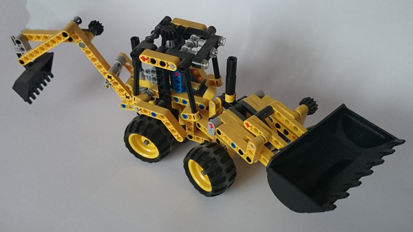
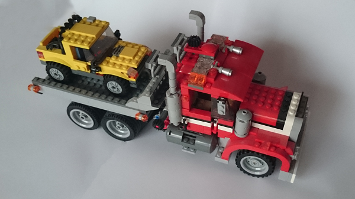
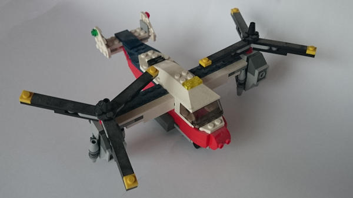

Strona poświęcona mojemu hobby - klockom Lego
Moją ulubioną serią jest seria Lego Technic, lecz najwięcej modeli (2) złożyłem z serii Lego Creator. Są to zestawy o numerach 65468 i 98498
Model z serii Lego Technic o numerze 42004 zawierający 246 części przeznaczony dla osób w wieku od 8 do 14 lat.
Ten model ma mnóstwo realistycznych szczegółów, takich jak podnoszenie, opuszczanie i opróżnianie przedniego oraz tylnego lemiesza.
Model z serii Lego Creator o numerze 7347 zawierający 805 części przeznaczony dla osób w wieku od 9 do 12 lat.
Zestaw umożliwia zbudowanie trzech pojazdów: lawety, ciężarówki z dźwigiem lub stylowego kabrioletu. Dołączone dwa świecące na żółto klocki.
Model z serii Lego Creator o numerze 31020 zawierający 216 części przeznaczony dla osób w wieku od 7 do 12 lat.
Rozkręć śmigła i wystartuj jak helikopter. Obróć silniki i ruszaj naprzód jako samolot, utrzymując równowagę dzięki tylnym stabilizatorom